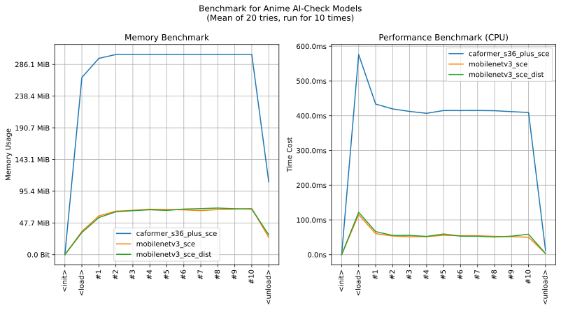

imgutils.validate.aicheck¶
- Overview:
A model for detecting AI-created images.
The following are sample images for testing.

This is an overall benchmark of all the AI-check validation models:
The models are hosted on huggingface - deepghs/anime_ai_check.
get_ai_created_score¶
-
imgutils.validate.aicheck.get_ai_created_score(image: Union[str, os.PathLike, bytes, bytearray, BinaryIO, PIL.Image.Image], model_name: str = 'mobilenetv3_sce_dist') → float[source]¶ - Overview:
Predict if the given image is created by AI (mainly by stable diffusion), given a score.
- Parameters:
image – Image to be predicted.
model_name – Name of the model. Default is
mobilenetv3_sce_dist. If you need better accuracy, usecaformer_s36_plus_sce. All the available values are listed on the benchmark graph.
- Returns:
A float number which represent the score of AI-check.
- Examples::
>>> from imgutils.validate import is_ai_created >>> >>> is_ai_created('aicheck/ai/1.jpg') True >>> is_ai_created('aicheck/ai/2.jpg') True >>> is_ai_created('aicheck/ai/3.jpg') True >>> is_ai_created('aicheck/ai/4.jpg') True >>> is_ai_created('aicheck/ai/5.jpg') True >>> is_ai_created('aicheck/ai/6.jpg') True >>> is_ai_created('aicheck/human/7.jpg') False >>> is_ai_created('aicheck/human/8.jpg') False >>> is_ai_created('aicheck/human/9.jpg') False >>> is_ai_created('aicheck/human/10.jpg') False >>> is_ai_created('aicheck/human/11.jpg') False >>> is_ai_created('aicheck/human/12.jpg') False
is_ai_created¶
-
imgutils.validate.aicheck.is_ai_created(image: Union[str, os.PathLike, bytes, bytearray, BinaryIO, PIL.Image.Image], model_name: str = 'mobilenetv3_sce_dist', threshold: float = 0.5) → bool[source]¶ - Overview:
Predict if the given image is created by AI (mainly by stable diffusion).
- Parameters:
image – Image to be predicted.
model_name – Name of the model. Default is
mobilenetv3_sce_dist. If you need better accuracy, usecaformer_s36_plus_sce. All the available values are listed on the benchmark graph.threshold – Threshold of the score. When the score is no less than
threshold, this image will be predicted asAI-created. Default is0.5.
- Returns:
This image is
AI-createdor not.
- Examples::
>>> from imgutils.validate import get_ai_created_score >>> >>> get_ai_created_score('aicheck/ai/1.jpg') 0.9996960163116455 >>> get_ai_created_score('aicheck/ai/2.jpg') 0.9999125003814697 >>> get_ai_created_score('aicheck/ai/3.jpg') 0.997803270816803 >>> get_ai_created_score('aicheck/ai/4.jpg') 0.9960069060325623 >>> get_ai_created_score('aicheck/ai/5.jpg') 0.9887709021568298 >>> get_ai_created_score('aicheck/ai/6.jpg') 0.9998629093170166 >>> get_ai_created_score('aicheck/human/7.jpg') 0.0013722758740186691 >>> get_ai_created_score('aicheck/human/8.jpg') 0.00020673229300882667 >>> get_ai_created_score('aicheck/human/9.jpg') 0.0001895089662866667 >>> get_ai_created_score('aicheck/human/10.jpg') 0.0008857478387653828 >>> get_ai_created_score('aicheck/human/11.jpg') 4.552320024231449e-05 >>> get_ai_created_score('aicheck/human/12.jpg') 0.001168627175502479